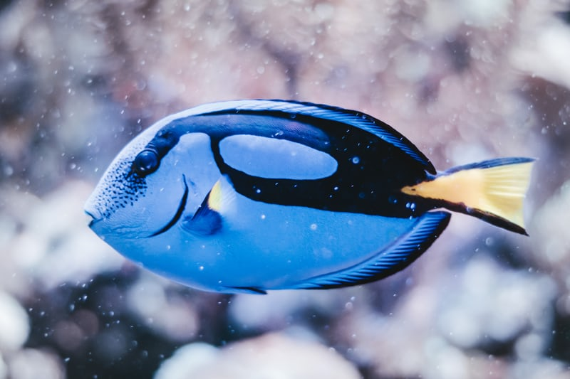

Awesome collection of fish

- Given Name: Dory
- Species: Royal Blue Tang
- Length: 4cm
- Diet: Seaweed
- Harvest Location: Pacific Ocean
fish two
fish three
Martin's Harvesting Adventures
"Fish are friends, not food"
Martin's Out-of-the-Way Places
- Beach
- Off the Coast of Japan
- Backyard swimming pool